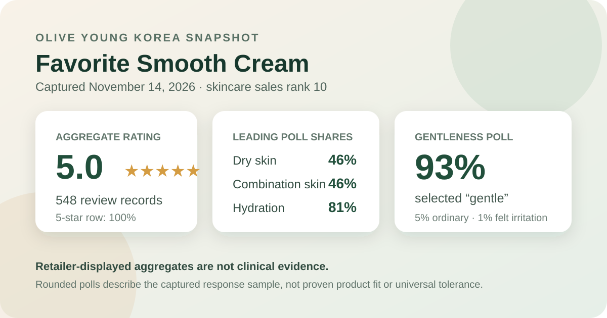
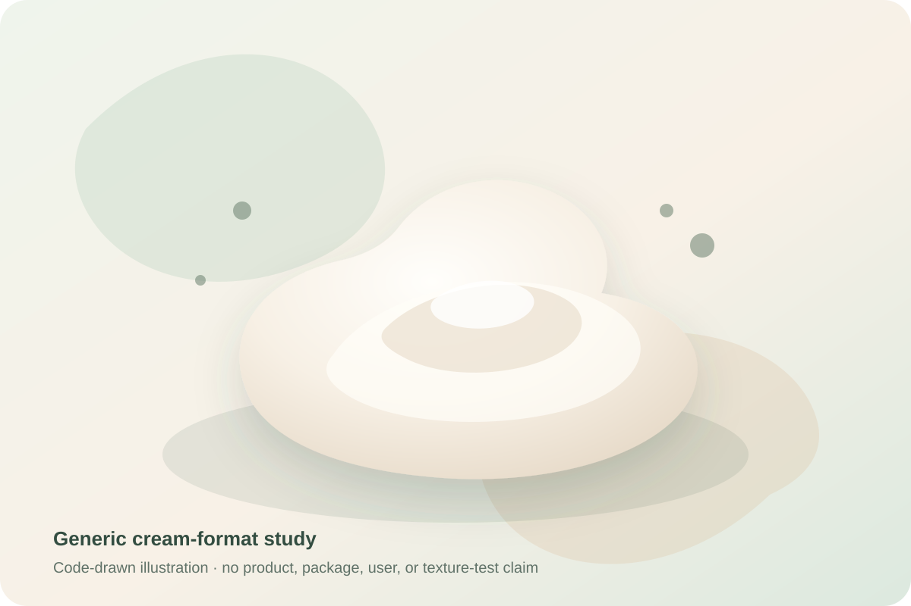

Data captured November 14, 2026. Olive Young Korea displayed the title “페이보릿 매끈 크림 50ml”; this article uses “Favorite Smooth Cream” as a readable English label. It uses only the retailer's title, rank, aggregate rating, displayed star row, and shopper polls. It does not copy or translate individual review text, names, or photos, and it makes no claim of firsthand use.

The short version: Favorite Smooth Cream appeared at number 10 in the captured skincare sales ranking. The ranking, product page, and official review statistics agreed on the product identity, while the review view displayed 5.0 out of 5 from 548 records. The only exposed star row was 100% five-star. Dry and combination skin tied at 46% in the skin-type poll; hydration led the concern poll at 81%; and gentle led the irritation panel at 93%. These are retail signals, not proof of moisturization, smoothing, barrier repair, or universal tolerance.
The captured official statistics showed an average of 5.0 stars from 548 review records. That is enough data to describe a clear storefront pattern at one moment: the displayed feedback was overwhelmingly favorable. It is not enough to treat the number as a clinical score, a probability of satisfaction, or a promise that every later buyer will have the same experience.
A retail review base is shaped by who bought, who chose to post, which orders were eligible, whether incentives or events were active, how the platform moderates records, and whether a listing changes over time. None of those mechanisms was fully disclosed in the captured statistics. The product was also new enough that its count could move quickly, so this article keeps the date next to the number instead of presenting 548 as permanent.
The official distribution exposed one row: 100% five-star. No four-, three-, two-, or one-star row was returned in the captured statistics. This article reports the source exactly as displayed and does not invent missing percentages.
A whole-number 100% row should be interpreted cautiously. It may reflect exact concentration in the underlying records, interface rounding, or both; the source did not expose raw star counts in this view. It also says nothing about why shoppers scored the listing highly. Price, launch promotions, packaging, delivery, expectations, or a review event may influence a retail rating alongside impressions of the cream itself.
The absence of a displayed lower-star row is not proof that complaints, reactions, or neutral experiences are impossible. It is simply the shape of the captured aggregate. Because no reliable anonymous topic summary was exposed, this analysis does not infer what reviewers praised or disliked from individual comments.
The skin-type poll displayed 46% dry, 46% combination, and 8% oily. Dry and combination respondents were tied, and together they accounted for 92% of the shown response shares. That balance makes the panel more mixed than a result dominated by one skin-type label, but it still describes participation rather than product performance.
The interface did not disclose the poll denominator, response rate, or a standardized method for assigning skin type. Self-described skin type can shift with season, climate, cleansing, medication, hormonal factors, and current irritation. A 46% dry share does not prove that the cream prevents dryness, while a 46% combination share does not establish that it avoids heaviness in oilier zones. The smaller oily share is not evidence that oily skin should avoid it.
The concern panel showed 81% hydration, 12% soothing, and 7% wrinkle or brightening. These rows total 100% at the interface's displayed precision. The careful conclusion is that hydration was the dominant concern label in this captured response panel.
That 81% figure is not a corneometer reading, transepidermal-water-loss result, barrier-recovery measure, or controlled comparison. It does not show how long moisture lasted, what else respondents used, whether the product changed visible dryness, or how much cream was applied. The 12% soothing response likewise does not establish reduced redness or inflammation, and the 7% wrinkle or brightening response is not an imaging or clinical endpoint.
The irritation panel displayed 93% gentle, 5% ordinary, and 1% felt irritation. The rounded rows total 99%, a normal consequence of whole-number presentation. Gentle was clearly the leading response, but the panel was not literally unanimous and the irritation category was not zero.
This aggregate cannot predict an individual's reaction. It does not screen allergies, active dermatitis, a compromised barrier, prescription use, or interactions with exfoliants, retinoids, acne treatments, fragrance, and other routine steps. “Gentle” is a shopper response, not a dermatologist assessment. The 1% irritation row also does not encode severity, timing, cause, or duration.

The retailer lists the item as a 50 ml cream. In general terms, facial creams are leave-on emulsions commonly placed after thinner routine steps. That category-level description does not verify this product's viscosity, richness, slip, fragrance, drying time, residue, pilling, makeup compatibility, or seasonal feel.
I did not open, smell, spread, layer, or wear this cream. The local illustration is an abstract swirl created from vector shapes, not a copied product image or a visual claim about the actual formula. Real sensory behavior depends on the current formula, amount used, skin condition, prior products, temperature, humidity, and later routine steps.
“매끈,” translated here as “smooth,” is part of the retailer-displayed product identity. It does not tell us what surface property was measured, how quickly any change might appear, how long it might last, or whether the claim refers to feel, appearance, makeup application, or something else. The 5.0 average cannot isolate a smoothing effect.
No standardized roughness score, profilometry, imaging, blinded grader assessment, pore measurement, wrinkle scale, comparator, or controlled observation period was available. The product name also does not prove exfoliation, resurfacing, wrinkle reduction, barrier repair, or medical treatment. Those conclusions would require defined endpoints and a suitable study design.
Rank 10 describes one moment in Olive Young Korea's skincare sales list. It is not a quality rank or a recommendation that the cream is the tenth-best choice. Promotions, launch activity, advertising, gifts, stock, seasonality, and short-term demand can all influence placement.
The captured page displayed a 50 ml size, a ₩37,000 reference price, and a ₩33,300 promotional price. Those details can change independently of the review data. Before purchase, confirm the current formula, seller, size, gift terms, stock, expiry information, return conditions, and checkout price on the live listing.
Favorite Smooth Cream was the first distinct unpublished ranked product after nine covered product families. Its captured storefront snapshot is unusually clean: rank 10, a 5.0 average across 548 records, a 100% exposed five-star row, an even 46%/46% dry-and-combination split, an 81% hydration response, and a 93% gentle response.
The responsible conclusion stops there. The snapshot does not prove smoothing, hydration, soothing, barrier repair, wrinkle change, or universal tolerance. Its best use is to understand the direction and composition of retailer feedback while keeping the fast-moving count, rounded polls, missing denominators, nonzero irritation share, and absence of controlled measurements visible.
The captured official statistics showed 5.0 out of 5 from 548 records, with the exposed five-star row at 100%.
Dry and combination skin were tied at 46% each, followed by oily at 8%. That describes representation, not proven suitability.
No. It is a rounded shopper-poll response, not an instrument-measured hydration or barrier result.
No. The panel cannot predict allergies, sensitivity, routine interactions, or individual tolerance.
No. The analysis uses retailer-displayed aggregates only and does not claim firsthand use.
Source: Olive Young Korea product listing for Favorite Smooth Cream, captured November 14, 2026. Rank, price, availability, gifts, counts, percentages, and listing details can change after capture.
Published by The K-Beauty Data Desk. This is an editorial analysis of retailer-displayed aggregates, not medical advice or a substitute for the current product label.
← All reviews · Review-volume rankings · Skin-poll explorer · Methodology